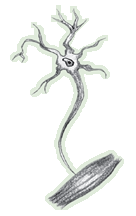

Amyotrophic lateral sclerosis (ALS) is a progressive neurodegenerative disease that affects nerve cells in the brain and the spinal cord. Motor neurons reach from the brain to the spinal cord and from the spinal cord to the muscles throughout the body. The progressive degeneration of the motor neurons in ALS eventually leads to their death. When the motor neurons die, the ability of the brain to initiate and control muscle movement is lost. With voluntary muscle action progressively affected, patients in the later stages of the disease may become totally paralyzed.